Bludit CMS | Funcionamento
Introdução ao sistema
Nesta página será abortado o funcionamento do CMS.
Visão Geral
O Bludit é o novo CMS desenvolvido por Diego Najar (Argentino) sendo o sucessor do descontinuado NibbleBlog. Atualmente está na versão 3.11 e possui diversos recursos implementados sendo possível criar tanto um site quanto um blog.
Screenshots
Estes prints foram tirados da instalação do Bludit 3.11.
Passo a passo da instalação do Bludit
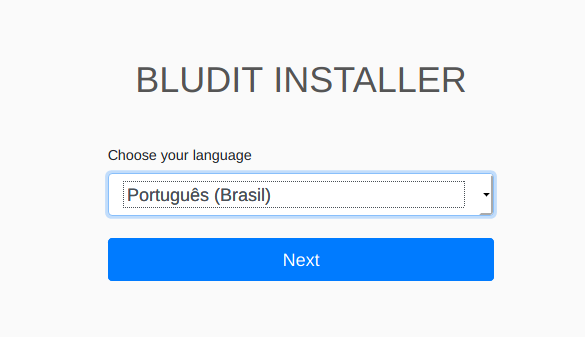


Administração Conteúdo
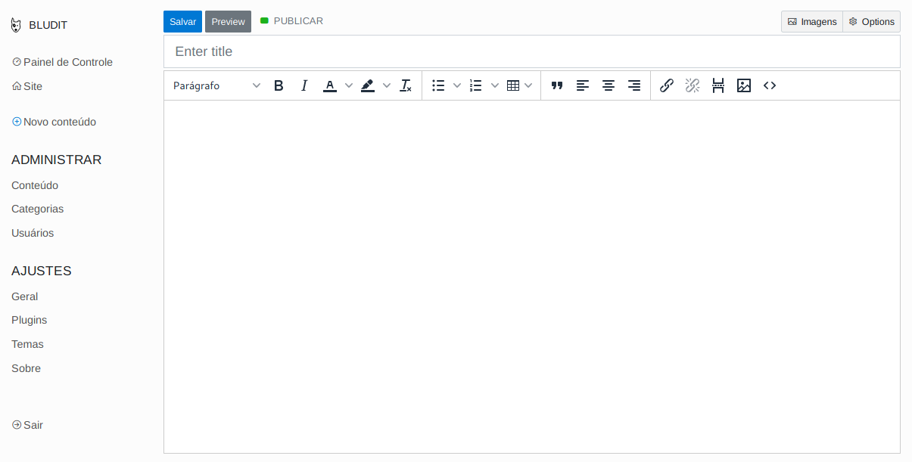 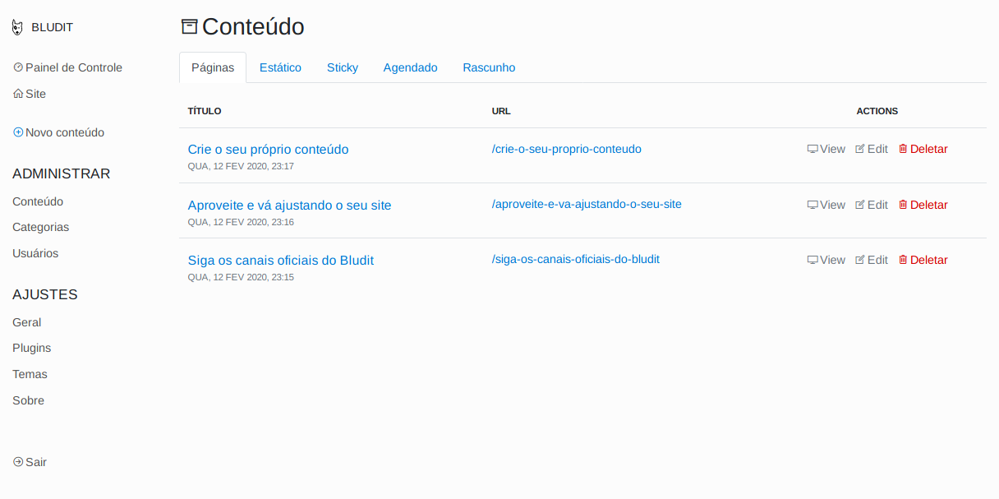 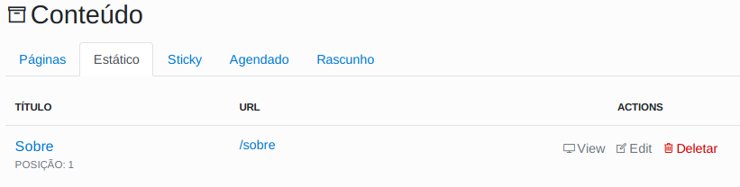
 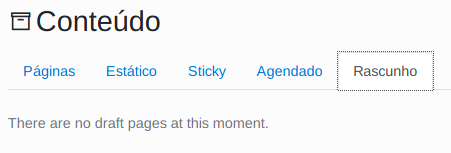
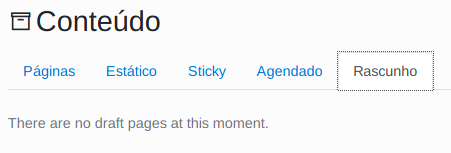
Administrar Usuário
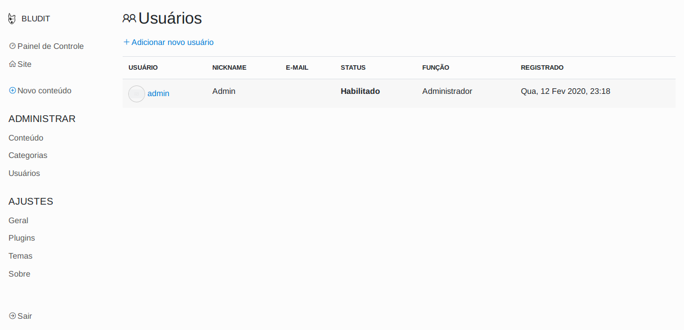 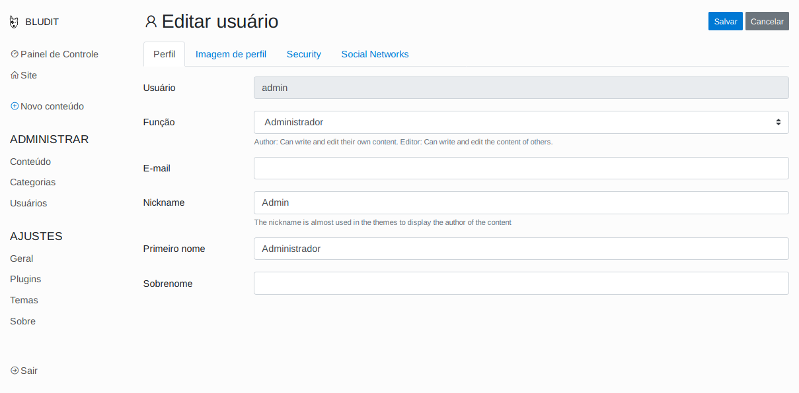 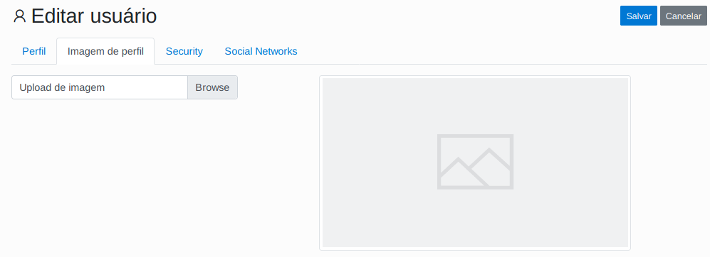 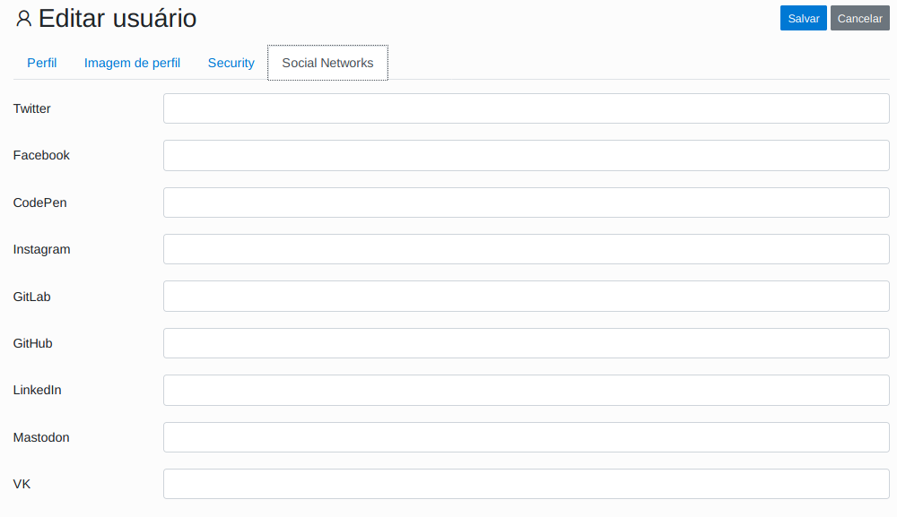
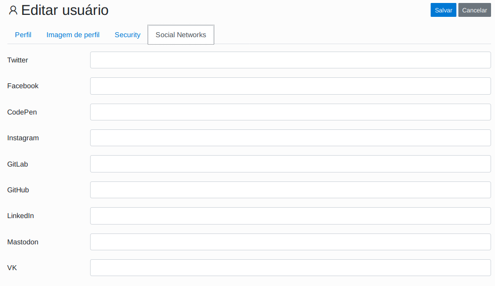

Ajustes Gerais
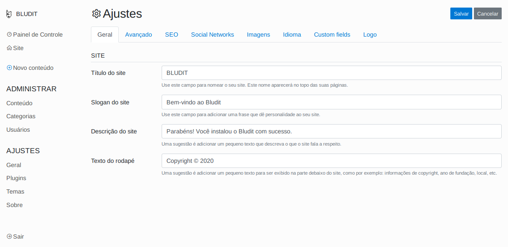 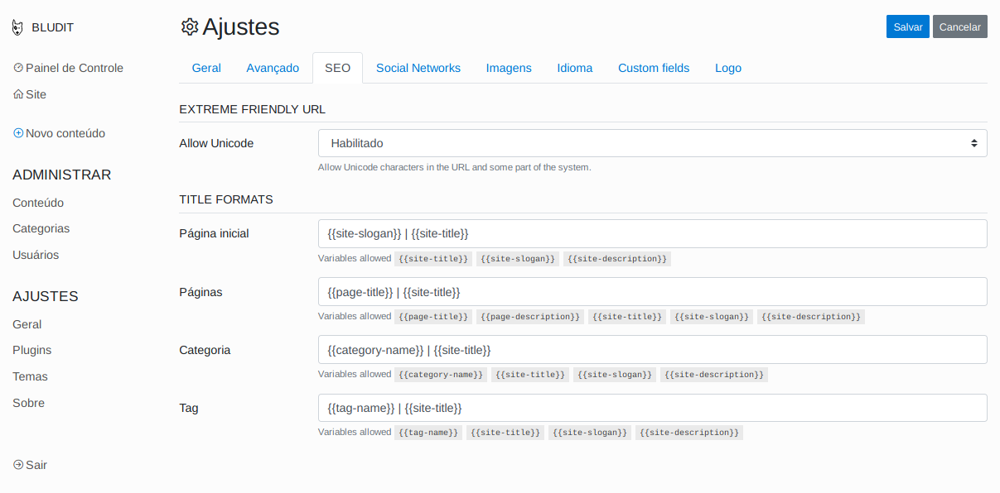
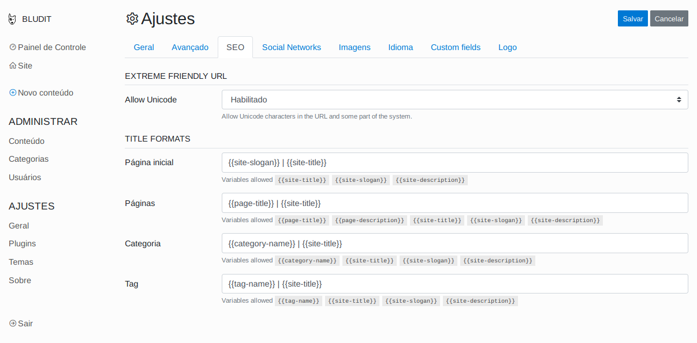

 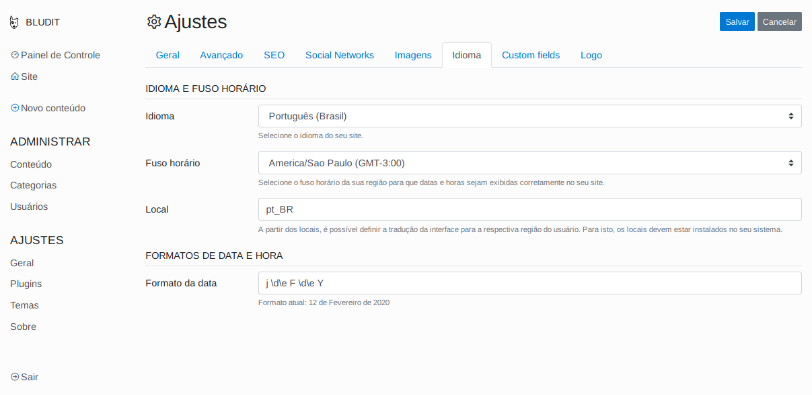
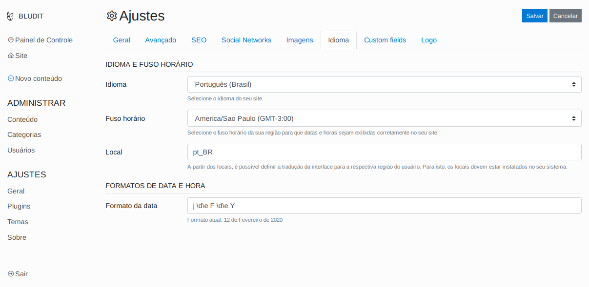

Categorias - Temas - Plugins
 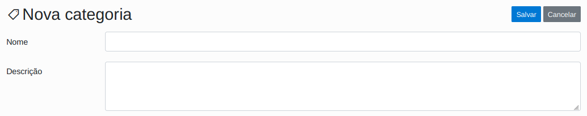
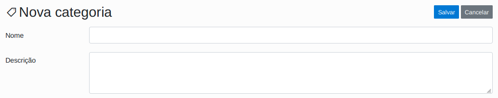


 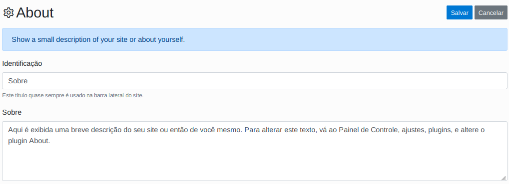
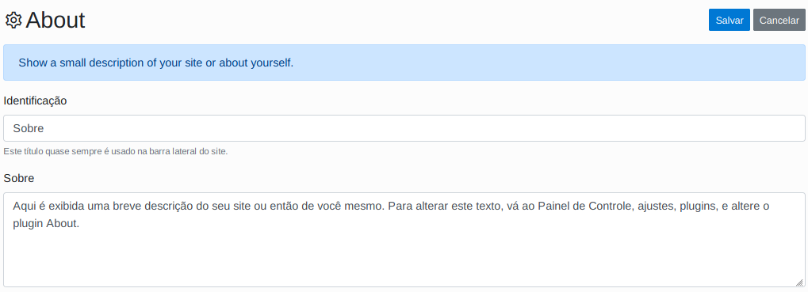
DEV: Temas e Plugins
O sistema disponibiliza os chamados ganchos, que são funções prestabelecidas ao qual são sobrescritas nos plugins ou temas e são invocados diretamente no tema.
No exemplo abaixo as funções serão automaticamente executadas nesses 3 locais de um template (tema) fictício: siteHead (dentro da tag head), siteBodyBegin (logo após a tag body) e siteBodyEnd (antes do término da tag body). Isso significa que todos plugins ativos que implementem o gancho será chamado naquele determinado local.
<!DOCTYPE html>
<html>
<head>
<title>Título da minha página</title>
<?php Theme::plugins('siteHead'); ?>
</head>
<body>
<?php Theme::plugins('siteBodyBegin'); ?>
<h1>Título</h1>
<p>Este é um parágrafo.</p>
<?php Theme::plugins('siteBodyEnd'); ?>
</body>
</html>
Lembre-se que nem todo plugin ou tema conterá esses hooks (ganchos). Trata-se um padrão do CMS que o desenvolvedor poderá ou não implementar em seu projeto.
No exemplo abaixo, você poderia colocar o código na lateral da página para chamar o siteSidebar. Ele retorna todos plugins ativados que tenham o método siteSidebar implementado e ordenados conforme URL https://EnderecoDoSite/admin/plugins-position (ou encontrado no painel de administração do bludit em Plugins->Alterar as posições dos plugins.
<?php Theme::plugins('siteSidebar') ?>
O método pode ser chamado diretamente ao invés de usar os recursos do sistema, após o plugin instalado. Note que é necessário printar (echo) diferente da classe Theme que já imprime por padrão. Neste exemplo utilizamos o plugin de categorias. Os plugins ficam na pasta bl-plugins, e dentro da pasta com nome do plugin (categories nesse caso) há o arquivo plugin.php que você pode abrir e verificar o funcionamento.
<?php
$objCat=new pluginCategories();
echo $objCat->siteSidebar();
?>